安全性
安全性
Cloud Insights 的新功能
 建議變更
建議變更
NetApp持續改善及強化其產品與服務。以下是 Cloud Insights 商業版中的一些最新功能。

|
Cloud Insights 聯邦版可能不提供這些功能、或是功能較少。在可能的情況下、文件中會記錄這些差異。 |
2024 年 3 月
工作負載安全代理程式詳細資料
每個工作負載安全代理程式都有自己的登陸頁面、您可以在其中輕鬆查看代理程式的摘要資訊、以及與該代理程式相關聯的已安裝資料和使用者目錄收集器。

更快速地記錄更多資料
分析資產登錄頁面上的資料時、只要將其他資料新增至 Expert View 圖表、就能輕鬆完成。對於登陸頁面上的每個資料表、如果物件類型有相關資料、請將游標移到該物件上、以顯示「 Add to Expert View 」（新增至專家檢視）圖示。選取此圖示會將該物件新增至「其他資源」、並顯示在「專家檢視」圖表中。

或者、您可能想要在自己的圖表中查看登陸頁表的資料。只要選取 _ 顯示圖表 _ 圖示、即可開啟表格下方的圖表：

2024 年 2 月
可用性改善
從右下拉式清單中選取「匯出為影像」、即可儲存目前儀表板的 * 快照 * 。Cloud Insights 會建立目前 Widget 狀態的 .PNG 。

-
物件和度量選擇 * 比以往更容易用於 Widget 、監視器等 選擇您要的物件類型、然後在個別的下拉式清單中選取與該物件相關的度量。

-
選取這些頁面頂端的圖示、將資料收集器與擷取裝置 * 清單匯出至 .CSV 。

我們已重新組織「說明」 > 「支援」頁面、讓您更容易找到所需內容、而且因為您有要求、我們在本頁新增了指向 * API Swagger* 和使用者文件的直接連結。

如果「警示」清單頁面上的「觸發開啟」欄位中的 * 連結 * 可用於該物件的登陸頁面、則會瀏覽至適當的登陸頁面。

查看命名空間中的所有變更
Kubernetes 變更分析現在可讓您在選取叢集和命名空間時查看變更時間表。之前、也必須選取工作負載。 在叢集和命名空間上篩選時、該命名空間中所有工作負載變更的時間表會顯示在一行中。

警示的相關記錄
檢視記錄警示時、相關記錄項目會顯示在新表格中。 如果記錄項目發生在與警示相同的來源和時間範圍內、且受到相同條件的約束、則記錄項目會有所關聯。選取「分析記錄」以進一步探索。

收集 ONTAP 交換器資料
工作負載安全資料收集器 API
在大型環境中、您可以使用新的 Data Collectorors API 、將工作負載安全收集器的建立作業自動化。瀏覽至 * 管理 > API 存取 > API 文件 * 、然後選取 Workload Security API 類型以深入瞭解。
2024 年 1 月
試用您尚未使用的 Cloud Insights 功能
除了 Cloud Insights 的初始試用版之外、您也可以利用 "模組試用"。例如、如果您已訂閱 Cloud Insights 、並且一直在監控儲存設備和虛擬機器、當您將 Kubernetes 新增至環境時、系統會自動試用 Kubernetes Observ易 觀察性 30 天。Kubernetes Observ易 受管設備使用量將不會計入您訂閱的權利、直到試用期結束為止。
我的工作負載有多健全？
工作負載健全狀況一覽 * Kubernetes > Explore > Workload * 頁面、讓您快速瞭解哪些工作負載效能良好、哪些工作負載可能需要一些協助。

資料收集器更新
資料網域識別
Data Domain 收集器已經過改良、可更好地識別 HA 系統、以確保容錯移轉事件之間的耐用性。此變更將導致重新識別 HA 系統中的 Data Domain 應用裝置 * 一次 * 、進而移除這些資產上的任何註釋（因為這些陣列將重新識別）。您需要重新附加附註至 Data Domain 物件。
增強的勒索軟體偵測 ML 演算法
工作負載安全性包括新的第二代勒索軟體偵測 ML 演算法、可更快更準確地偵測最複雜的攻擊。
行為的「季節性」：週末行為可能會遵循不同的模式、從平日或從下午開始的早晨行為。工作負載安全演算法會將這種季節性因素納入考量。
2023 年 12 月
變更分析概覽
Kubernetes "變更分析" 提供您 Kubernetes 環境最近變更的全方位檢視。警示和部署狀態盡在您的掌握之中。利用 Change Analytics 、您可以追蹤每個部署和組態變更、並將其與 K8s 服務、基礎架構和叢集的健全狀況和效能建立關聯。
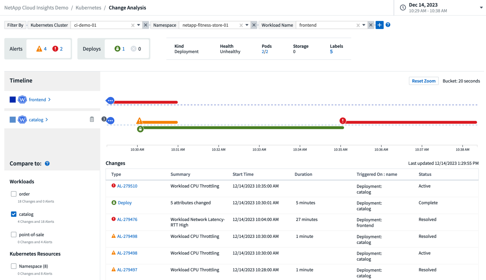
Kubernetes 工作負載效能儀表板
完整的 Kubernetes 工作負載效能儀表板可讓您一眼掌握工作負載效能。快速檢視 Volume 、輸送量、延遲和重新傳輸趨勢的圖表、以及環境中每個命名空間的工作負載流量表。篩選器可讓您輕鬆專注於感興趣的領域。
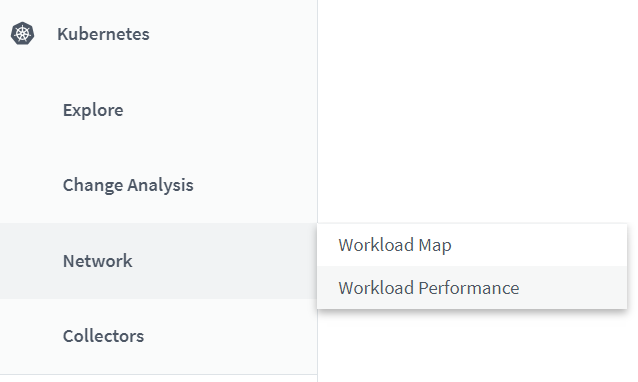
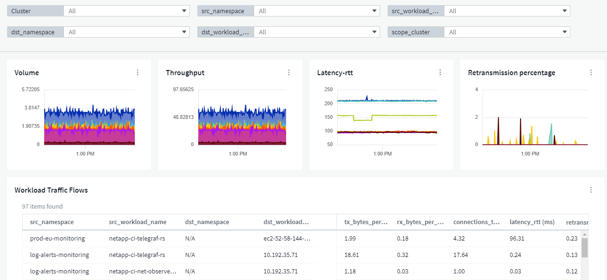
在單一畫面上查詢詳細資料
在查詢中、選取列會開啟側邊面板、顯示所選列的屬性、附註和度量詳細資料、提供實用資訊、而不需要深入物件的登陸頁面。列或側邊面板中的連結可讓您輕鬆瀏覽。

資料收集器更新：
-
* Brocade FOS REST * ：此收集器已移出「預覽」、現在已普遍推出。注意事項：
-
FOS 推出其 REST API 搭配 FOS 8.2 。但有些功能（例如路由）只接收 9.0 版的 REST API 功能。
-
如果您的架構包含高於 8.2 的混合式 FOS 資產、以及某些 < 8.2 、則 Cloud Insights FOS REST 收集器將無法探索這些較舊的資產。您可以編輯 FOS REST 收集器、並建立以逗號分隔的清單、列出這些裝置的 IPv4 位址、以便從該收集器中排除。
-
-
* SELinux* ： Cloud Insights 包含 Linux 擷取單元初始安裝的增強功能、可確保啟用 SELinux 強制功能的 Linux 環境中運作更為穩健。這些增強功能只會影響 new AU 部署；如果您有任何與 AU 升級相關的 SELinux 問題、請聯絡 NetApp 支援部門以修正您的 SELinux 組態。
2023 年 11 月
工作負載安全性：暫停 / 恢復收集器
在工作負載安全性中、如果收集器處於 _Running 狀態、您可以暫停資料收集器。開啟收集器的「三點」功能表、然後選取暫停。當收集器暫停時、不會從 ONTAP 收集任何資料、也不會將資料從收集器傳送至 ONTAP 。選取恢復以開始重新收集。
儲存節點支援資訊
在儲存節點登陸頁面上、 _ 使用者資料 _ 區段提供您的支援服務、目前狀態、支援狀態和保固結束日期的概覽資訊。請注意、 Cloud Insights 目前僅會自動發佈 NetApp 裝置的此資訊。另請注意、這些支援欄位是附註、因此可用於查詢和儀表板。

將 VMware 標記對應至 Cloud Insights 註釋
。 "VMware" 資料收集器可讓您使用在 VMware 上設定的相同名稱標籤填入 Cloud Insights 文字註解。
適用於 FOS 9.1.1 c 及更高版本韌體的 Brocade CLI 收集器可靠性增強功能
在某些執行 9.1.1c 韌體的 Brocade Fibre Channel 交換器上、某些 CLI 命令的輸出可能會以「 motd 」登入橫幅文字作為前置字元、或是使用者變更預設密碼的警告。Brocade CLI 收集器已經過強化、可忽略這兩種無關文字類型。
在此增強之前、只有沒有虛擬架構的 FOS 9.1.1 交換器可能會在此收集器類型中被發現。
2023 年 10 月
增強工作負載安全性
工作負載安全性已透過下列方式獲得改善：
-
* 拒絕存取 * ：工作負載安全性與 ONTAP 整合以接收 "「存取遭拒」事件" 並提供額外的分析和自動回應層。
-
* 允許的檔案類型 * ：如果偵測到已知副檔名的勒索軟體攻擊、則可以將該副檔名新增至 "允許的檔案類型" 避免不必要警示的清單。
模組試用
除了 Cloud Insights 的初始試用版之外、您也可以利用 "模組試用"。例如、如果您已訂閱基礎架構可服務性、但正在將 Kubernetes 新增至您的環境、則您將自動參加 Kubernetes Observ易 服務性的 30 天試用。在試用期結束時、您只需支付 Kubernetes Observ易 受管理單元的使用費用。
限制對指定網域的存取
管理員和帳戶擁有者現在有能力 "限制 Cloud Insights 存取" 以電子郵件傳送他們指定的網域。移至 * 管理 > 使用者管理 * 、然後選取 _ 限制網域 _ 按鈕。

資料收集器更新
下列資料收集器 / 擷取單元變更已就緒：
-
* Isilon / PowerScale REST * ： emc_isilon.node_pool.* 名稱下的 Cloud Insights 增強分析功能已新增各種新屬性和指標。這些計數器和屬性可讓使用者建置儀表板和監控器、以利使用 node_pool 容量；使用以不同硬體節點模型建置的 Isilon 叢集的使用者將擁有多個節點集區、瞭解節點集區層級的 HDD/SSD/total 容量使用量對於監控和規劃都很有用。
-
* Rubrik* 「服務帳戶」驗證支援： Cloud Insights 的 Rubrik 收集器現在支援傳統的 HTTP 基本驗證（使用者名稱和密碼）、以及 Rubrik 的服務帳戶方法（需要使用者名稱 + 秘密 + 組織 ID ）。
2023 年 9 月
輕鬆在記錄檔中找到您想要的內容
記錄查詢（ * 可伺服性 > 記錄查詢 > + 新記錄查詢 * ）包含數個項目 "增強功能" 讓記錄探索變得更簡單、資訊更豐富。
包括 / 排除
篩選值時、您可以輕鬆選擇是否要 * 包含 * 或 * 排除 * 符合篩選條件的結果。選取「排除」會建立「非 <value> 」篩選器。您可以在單一篩選器中合併「包含」和「排除」值。

進階查詢
-
進階查詢 * 可讓您建立「自由格式」篩選器、使用 AND 、 not 、 OR 、通配符等來合併或排除值

「篩選條件」和「進階查詢」會「和」一起組成單一查詢。結果會顯示在結果清單和圖表中。
在圖表中分組
當您選取 * 群組依據 * 的記錄屬性時、清單和圖表會顯示目前篩選的結果。在圖表中、分成不同色彩的欄。將游標移到圖表中的某一欄上、會顯示特定項目的詳細資料、類似於展開圖表圖例時所顯示的整體資訊。 在圖例中、您也可以選擇為特定群組設定「包括」或「排除」篩選。

「浮動」記錄詳細資料面板
使用記錄查詢探索記錄時、在清單中選取項目會開啟該項目的詳細面板。您現在可以選擇顯示滑出面板「浮動」（即顯示在螢幕的其餘部分）或「頁面」（即顯示為頁面內的自己框架）。若要在這些檢視之間切換、請選取面板右上角的「頁面 / 浮動」按鈕。

收合功能表
您可以選取功能表下方的「最小化」按鈕、以收合左側的 Cloud Insights 導覽功能表。將功能表最小化時、請將游標移至圖示上方、查看其開啟的區段；選取圖示會開啟功能表、並直接前往該區段。

Data Collector 改良功能
Cloud Insights 讓顯示和尋找資料收集器資訊變得更容易：
-
* 資料收集器清單 * 的處理效率更高、這表示顯示和瀏覽這些清單所需的時間將大幅縮短。如果您的環境很大、而且有許多資料收集器、則在列出資料收集器時、您會看到顯著的改善。
-
* 資料收集器支援對照表 * 已從 .PDF 檔案移至 .html 型頁面、瀏覽速度更快、維護更輕鬆。請在此查看新的對照表： https://docs.netapp.com/us-en/cloudinsights/reference_data_collector_support_matrix.html
2023 年 8 月
收集 Isilon / PowerScale 記錄和進階分析資料
Isilon REST 和 PowerScale REST 收集器具有下列改良功能：
-
Isilon 記錄事件可用於查詢和警示
-
Isilon 進階分析屬性可用於查詢、儀表板和警示：
-
emc_isilon 叢集
-
emc_isilon.node
-
emc_isilon.node_disk
-
emc_isilon.net_iface
-
依預設、 Isilon REST 和 / 或 PowerScale REST 收集器的使用者會啟用這些功能。NetApp 強烈鼓勵 Isilon CLI 型收集器的使用者移轉至新的 REST API 型收集器、以接收上述增強功能。
改善工作負載對應
工作負載對應更易使用且較不吵雜；如果所有類似的外部服務與相同的工作負載通訊、則會將這些服務群組在一個節點中、以降低圖表的複雜度、並讓您更容易瞭解服務如何互連。
選擇群組節點將會顯示詳細的表格、其中列出與該節點相關的每項外部服務的網路流量計量。
Kubernetes 託管單元使用量調整
如果 Kubernetes 叢集環境中的運算資源同時由 NetApp Kubernetes 監控操作員和基礎基礎架構資料收集器（例如 VMware ）計算、則會調整這些資源的使用量、以確保管理單元的最有效率計算。您可以在「管理」 > 「訂閱」頁面的「摘要」和「使用」標籤中、檢視 Kubernetes MU 調整。
摘要索引標籤：

使用標籤：

收集器 / 擷取變更：
下列資料收集器 / 擷取單元變更已就緒：
-
採購單位現在支援 RHEL 8.7 。
改良功能表
我們已更新左側導覽功能表、以更好地支援客戶的工作流程。新的頂層項目（例如 Kubernetes ）可加速存取客戶需求、而整合式管理員主控台則可支援租戶擁有者角色。
以下是一些變更的其他範例：
-
頂層的 Observity 功能表會顯示資料探索、警示和記錄查詢
-
「 API 存取」功能可用於「可服務性」和「工作負載安全性」、位於單一功能表下
-
同樣地、「可觀察性」和「工作負載安全性」的「通知」功能、現在也在單一功能表下

以下是您可以在每個功能表下找到的功能的簡短清單：
可觀察性：
-
探索（儀表板、指標查詢、基礎架構洞見）
-
警示（監控和警示）
-
收集器（資料收集器和擷取單元）
-
記錄查詢
-
豐富（附註和附註規則、應用程式、裝置解析度）
-
報告
Kubernetes：
-
叢集探索與網路地圖
工作負載安全性：
-
警示
-
鑑識
-
收集器
-
原則
ONTAP 基礎概論：
-
資料保護
-
安全性
-
警示
-
基礎架構
-
網路
-
工作負載
-
VMware
管理員：
-
API存取
-
稽核
-
通知
-
訂閱資訊
-
使用者管理
2023 年 7 月
顯示最近的變更
資料收集器登陸頁面現在包含最近變更的清單。只要按一下任何資料收集器登陸頁面底部的「最近變更」按鈕、即可顯示最近的資料收集器變更。

洞見：回收 Cold Storage
。 "回收 ONTAP Cold Storage Insight" 現在支援 FlexGroups 、現在可供所有客戶使用。
營運者影像簽名
對於使用私有儲存庫做為 NetApp Kubernetes 監控操作員的客戶、您現在可以在操作員安裝期間複製影像簽名公開金鑰、讓您確認下載軟體的真實性。在選擇性步驟中選取 _ 複製影像簽名公開金鑰 _ 按鈕、將操作者影像上傳至您的私有儲存庫 _ 。
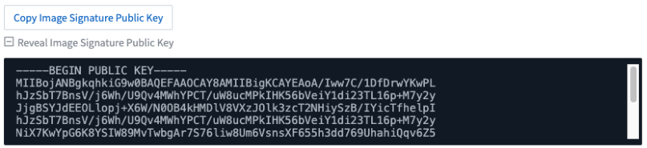
查詢的集合、設定格式化的條件等
集合體、單位選擇、條件格式化和欄重新命名是儀表板表格 Widget 最實用的功能、現在這些功能也適用於 "查詢"。

這些功能現在可用於整合類型的資料（ Kubernetes 、 ONTAP 進階度量等）、基礎架構物件（儲存、 Volume 、交換器等）即將推出。
用於稽核的 API
您現在可以使用 API 來查詢或匯出稽核事件。前往「管理」 > 「 API 存取」、然後選取「 _API 文件 _ 」連結以取得資訊。

Data Collector ： Trident 經濟型
Cloud Insights 現在支援 Trident 經濟驅動程式、實現以下效益：
-
深入瞭解 pod 對 ONTAP Qtree 對應和效能指標。
-
提供從 Kubernetes Pod 到後端儲存設備的無縫疑難排解和簡易導覽
-
主動偵測顯示器的後端效能問題
2023 年 6 月
查看您的使用情況
自 2023 年 6 月起、 Cloud Insights 根據功能集提供受管理單元使用量的明細。現在您可以快速檢視及監控基礎架構的管理單元（ MU ）使用量、以及 Kubernetes 的 MU 使用量。
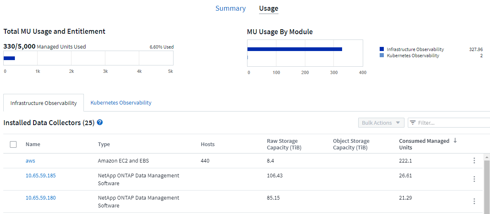
Kubernetes 網路監控與地圖可供所有人使用
。 "_Kubernetes 網路效能與地圖 _" 藉由對應 Kubernetes 工作負載之間的相依性、簡化疑難排解程序、提供 Kubernetes 網路效能延遲和異常狀況的即時可見度、以便在效能問題影響使用者之前先識別這些問題。許多客戶發現這項功能在 Preview 期間非常實用、現在每個人都能盡情享受。
收集器 / 擷取變更：
下列資料收集器 / 擷取單元變更已就緒：
-
資料網域與 Coassity MU 的計量單位為 40 TiB ： 1 MU 。
-
採購單位現在支援 RHEL 和 Rocky 9.0 和 9.1 。
全新 ONTAP Essentials 儀表板
下列 ONTAP Essentials 儀表板已在 Preview 環境中推出、現在可供所有人使用：
-
安全性儀表板
-
資料保護儀表板（包括本機與遠端保護概述）
其他系統監視器
Cloud Insights 隨附下列系統監視器：
-
儲存 VM FCP 服務無法使用
-
儲存 VM iSCSI 服務無法使用
2023 年 5 月
改善 Kubernetes 監控操作員安裝
的安裝與組態 "NetApp Kubernetes監控操作員" 下列改善功能比以往更容易：
-
環境 "組態設定" 保存在單一、自行記錄的組態檔案中。
-
將 Kubernetes Monitoring Operator 影像上傳至私有儲存庫的逐步指示。
-
只需一個命令即可輕鬆升級 Kubernetes Monitoring 、同時保留自訂組態。
-
更安全： API 金鑰可安全地管理機密。
-
輕鬆整合並部署您的 CI/CD 自動化工具。
儲存虛擬化
Cloud Insights 可以區分擁有本機儲存或其他儲存陣列虛擬化的儲存陣列。這可讓您將成本與效能與前端完全關聯到基礎架構後端。

報告 Kubernetes 資料
藉由 Cloud Insights 收集的 Kubernetes 資料（包括持續容量（ PV ）、 PVC 、工作負載、叢集和命名空間）現在可用於報告、提供計費、趨勢分析、預測、 TTF 計算、 以及其他有關 Kubernetes 指標的業務報告。
為新客戶啟用預設的 ONTAP 系統監控
在新的 Cloud Insights 環境中、許多 ONTAP 系統監視器預設為啟用（即 _ 恢復 _ ）。以前、大部分的顯示器預設為 _ 已暫停 _ 狀態。由於企業需求因公司而異、因此我們建議您隨時查看 "系統監視器" 在您的環境中、並根據您的警示需求暫停或恢復每個警示。
2023 年 4 月
Kubernetes 效能監控與地圖
。 "_Kubernetes 網路效能與地圖 _" 功能可對應 Kubernetes 工作負載之間的相依性、簡化疑難排解。它可即時查看 Kubernetes 網路效能延遲和異常狀況、在效能問題影響使用者之前先找出問題。此功能可分析及稽核 Kubernetes 流量、協助組織降低整體成本。
主要功能：•工作負載對應表呈現 Kubernetes 工作負載相依性和流程、並強調網路和效能問題。•監控 Kubernetes Pod 、工作負載和節點之間的網路流量、找出流量和延遲問題的來源。•分析入口、出口、跨區域和跨區域網路流量、藉此降低整體成本。
顯示「投影片」詳細資料的工作負載地圖：

Kubernetes 效能監控與地圖以 A 的形式提供 "預覽" 功能。

回收 ONTAP Cold Storage
回收 ONTAP Cold Storage_ Insight 可提供冷容量、潛在成本 / 電力節約的相關資料、以及 ONTAP 系統上 Volume 的建議行動項目。

有了這個 Insight 、您可以回答下列問題：
-
儲存叢集上有多少冷資料位於（ a ）高成本 SSD 磁碟、（ b ） HDD 磁碟和（ c ）虛擬磁碟上？
-
在未最佳化的儲存設備方面、哪些工作負載是最大的貢獻者？
-
在指定工作負載上、資料處於冷狀態的持續時間（以天為單位）為何？
回收 ONTAP Cold Storage_ 被視為 A "預覽" 功能、因此可能有所變更。
訂閱通知也會控制橫幅訊息
現在、設定訂閱通知（管理 > 通知）的收件者也會控制誰會看到與訂閱相關的產品內橫幅通知。


依預設會暫停監視器
對於新的 Cloud Insights 環境、請注意 "系統定義的監視器" 依預設、請勿傳送警示通知。您需要為任何想要提醒您的監視器啟用通知、方法是為監視器新增一或多種傳送方法。對於現有的 Cloud Insights 環境、目前處於「 Paused 」（暫停）狀態的任何系統定義監視器、其預設的 _global 通知收件者清單都已移除。使用者定義的通知會保持不變、目前作用中系統定義的監視器也會保持通知設定。
尋找 API 量測標籤？
API 量測已從「訂閱」頁面移至「 * 管理 > API 存取 * 」頁面。
2023年3月
Cloud Connection for ONTAP R得9.9以上版本已過時
Cloud Connection ONTAP for Re9.9+資料收集器已過時。從2023年4月4日起、您環境中的Cloud Connection資料收集器將不再收集資料、而會在輪詢時顯示錯誤。Cloud Connection資料收集器將在Cloud Insights 後續更新中從功能性的功能中一併移除。
在2023年4月4日之前、您必須為ONTAP Cloud Connection目前收集的ONTAP 所有其他系統、設定新的NetApp支援資料管理軟體資料收集器。 "深入瞭解"。
2023年1月
新的記錄監控器
我們新增了將近二十個 "額外的系統監視器" 以警示中斷的互連連結、活動訊號問題等。此外、我們也新增三個資料保護記錄監控器、以警示SnapMirror自動重新同步、MetroCluster 鏡射和FabricPool 鏡射鏡射重新同步變更。
請注意、這些監視器中有部分預設為啟用_；如果您不想對它們發出警示、則必須暫停_。另外請注意、這些監視器並未設定為傳送通知；如果您想要透過電子郵件或網路勾點傳送警示、則必須在這些監視器上設定通知收件者。
所有儀表板表格小工具的.CSV匯出
確保資料存取是不可或缺的要素、因此我們已匯出.CSV 無論您查詢的資料類型（資產或整合）為何、均可用於所有的度量查詢、儀表板表格小工具和物件登陸頁面。
欄選取、重新命名欄及單位轉換等資料自訂功能現在也包含在新的匯出功能中。
2022年12月
探索勒索軟體保護功能及Cloud Insights 其他安全功能、並在VMware試用版中提供
從今天起、註冊全新的Cloud Insights VMware試用版、即可探索勒索軟體偵測和自動化使用者封鎖回應原則等安全功能。如果您尚未註冊試用版、請立即試用！
Kubernetes工作負載有自己的登陸頁面
工作負載是Kubernetes環境的重要一環、Cloud Insights 因此現在提供這些工作負載的登陸頁面。您可以在此檢視、探索及疑難排解影響Kubernetes工作負載的問題。

檢查您的校驗和
您要求我們在安裝 Windows 和 Linux 的代理程式時、提供檢查值、我們認為這是個好主意。以下是：

記錄警示功能改善
分組依據
建立或編輯記錄監視器時、您現在可以設定「分組依據」屬性、以便發出更專注的警示。在您的監視器定義中、尋找「篩選」設定下方的「分組依據」屬性。

此變更可將監控定義的「分組依據」層面正規化、使度量監視器和記錄監視器達到功能同位元。此同位元檢查可讓客戶複製/複製*純*系統定義的預設監視器、以供進一步自訂。
複製
您現在可以複製（複製）變更記錄、Kubernetes記錄和資料收集器記錄監視器。這會建立新的自訂記錄監視器、您可以修改其特定定義。

11 ONTAP 全新預設的支援SnapMirror的顯示器、可確保營運不中斷
我們新增了將近十幾項新功能 "系統監視器" 適用於SnapMirror for Business Continuity（SMBC）、可警示SMBC憑證和ONTAP Synchopi的變更。
2022年11月
超過40台全新的安全、資料收集和CVO監控器！
我們新增數十部系統定義的新監控器、以警示您有關Cloud Volumes、Security和Data Protection的潛在問題。深入瞭解這些監視器 "請按這裡"。
2022年10月
透過整合不含VMware的勒索軟體保護功能、提供更好、更準確的勒索軟體偵測功能ONTAP
利用整合功能與VMware整合、改善勒索軟體偵測功能Cloud Secure ONTAP "自主勒索軟體保護" （Arp）。
針對潛在的Volume檔案加密活動、接收到一些不實的Arp事件、Cloud Secure ONTAP 以及
-
將磁碟區加密事件與使用者活動建立關聯、以識別造成損害的人員、
-
實作自動回應原則來封鎖攻擊、
-
識別哪些檔案受到影響、有助於更快恢復並進行資料外洩調查。
2022年9月
基本版提供監視器
ONTAP "預設監視器" 現在可在Cloud Insights 《簡易版》中使用。其中包括70多台基礎架構監控器和30個工作負載範例。
強大功能與功能儀表板ONTAP StorageGRID
儀表板庫包含ONTAP 全新的儀表板、可用於顯示功能和溫度、StorageGRID 以及四個用於顯示功能的儀表板。如果您的環境正在收集ONTAP 功能強大的指標和/或StorageGRID 功能不整的資料、請選取「+來源圖庫」來匯入這些儀表板。
表格中的臨界值可見度一目瞭然
設定格式化的條件可讓您在表格小工具中設定及強調警示層級和臨界層級的臨界值、讓外在資料點和特殊資料點立即可見。

安全監控器
當系統偵測到FIPS模式已停用時、會發出警示。Cloud Insights ONTAP深入瞭解 "系統監視器"請觀看此空間、瞭解更多安全監視器、即將推出！
隨處聊天
從任何一個畫面、Cloud Insights 選擇新的*「說明」>「即時聊天*」連結、與NetApp支援專家聊天。如需協助、請參閱「？」 畫面右上角的圖示。

更多可見洞見
如果您的環境使用的是 "洞見" 例如「受壓力的共享資源」或「空間不足的資源」、受影響資源的資產登陸頁面現在包含Insight本身的連結、可提供更快速的探索和疑難排解。
新的資料收集器
-
Amazon S3（預覽版）
-
Brocade FOS 9.1.x
-
Dell/EMC PowerStore 3.0.00.0
其他資料收集器更新
現在、所有資料來源都已經過最佳化、可在擷取單元更新及/或修補程式之後恢復效能輪詢。
2022年8月
更新外觀！Cloud Insights
從本月開始、「監控與最佳化」已重新命名為*可服務性*。您可以在這裡找到您最喜愛的功能、例如儀表板、查詢、警示和報告。此外、請在Cloud Secure 全新的* Security *功能表下尋找請注意、只有功能表有所變更；功能功能維持不變。

正在尋找*說明*功能表？
現在、請在螢幕右上角提供協助。

不確定從何處開始？瞭ONTAP 解此程式集！
"《程式集》ONTAP" 是一組儀表板和工作流程、可提供詳細的NetApp ONTAP 資訊庫、工作負載和資料保護檢視、包括儲存容量和效能的數天至全日預測。您甚至可以查看是否有任何控制器以高使用率執行。適用於NetApp的所有監控需求的最佳選擇！ONTAP ONTAP
所有版本均可提供的《程式集：程式集」是專為現有的VMware操作員和管理員所設計、可讓您輕鬆從ActiveIQ Unified Manager移轉至服務型管理工具。ONTAP ONTAP

儲存資料系列已合併
您提出了要求、現在您已經做好了。儲存基礎2和基礎10資料單元現已合併成一個系列、從位元組、位元組、到元組和TB、讓您更輕鬆地在儀表板上顯示資料。資料傳輸率現在也是他們自己的一個龐大家族。

我的儲存設備使用多少電力？
使用ONTAP NetApp_ONTAP.storage機櫃、NetApp_ONTAP.system_node和NetApp_ONTAP.cluster（僅用電量）指標、顯示及監控您的不只是儲存櫃和節點的用電量、溫度和風扇速度。

功能會從預覽中畢業
下列功能已從「預覽」移出、現在可供所有客戶使用：
功能 |
說明 |
Kubernetes命名空間不足 |
Kubernetes Namspaces Outout of space Insight可讓您檢視Kubernetes命名空間中可能會耗盡空間的工作負載、並預估每個空間將滿之前的剩餘天數。"瞭解更多資訊" |
共享資源正承受壓力 |
「受壓力影響的共享資源」見解使用AI / ML自動識別資源爭用造成環境效能降級的位置、強調任何受影響的工作負載、並提供建議的補救行動、讓您更快解決效能問題。"瞭解更多資訊" |
–封鎖攻擊時的使用者存取Cloud Secure |
偵測到攻擊時、能夠封鎖使用者存取、為您的業務關鍵資料提供更好的保護。您可以使用自動回應原則、或從警示或使用者詳細資料頁面手動封鎖存取。"瞭解更多資訊" |
我的資料收集健全狀況如何？
提供兩個新的擷取單元活動訊號監視器、以及兩個監視器、可在資料收集器故障時向您發出警示。Cloud Insights這些功能可用於在資料收集問題上快速警示您。
下列監視器現在可在_Data Collection_監控群組中使用：
-
擷取單元的「關鍵訊號」
-
擷取單位訊號警告
-
收集器失敗
-
收集器警告
請注意、這些監視器預設為「暫停」狀態。啟動它們以收到有關資料收集問題的警示。
自動續訂API Token
API存取權杖現在可設定為自動續約。啟用此功能後、系統會自動針對即將到期的權杖產生新的/重新整理的API存取權杖。使用過期權杖的支援代理程式會自動更新、以使用對應的新增/重新整理的API存取權杖、讓他們能繼續順暢運作。Cloud Insights只要在建立權杖時勾選「自動更新權杖」方塊即可。此功能目前支援Cloud Insights 在Kubernetes平台上執行的支援最新NetApp Kubernetes監控操作者的支援。
Basic Edition帶給您的效能比以往更高
您的試用即將結束、但您還不確定訂閱是否適合您？Basic Edition總是讓您有機會繼續使用Cloud Insights 目前ONTAP 的VMware資料收集器來搭配使用VMware、但現在您也可以繼續擷取VMware版本、拓撲和IOPS/ThroU/Latency資料。在其儲存系統上享有優質支援的NetApp客戶也有權獲得Cloud Insights 支援。
準備好瞭解更多資訊了嗎？
請參閱「說明」>「支援」頁面的「學習中心」區段、以取得NetApp University Cloud Insights 支援課程的連結！
2022年6月
Kubernetes叢集飽和及其他詳細資料
利用改良的叢集詳細資料頁面、提供「配置」詳細資料、以及更清楚的命名空間和工作負載檢視、使探索Kubernetes環境變得比以往更輕鬆。Cloud Insights

除了節點、Pod、命名空間和工作負載數之外、叢集清單頁面也能快速檢視飽和程度：

您的Kubernetes叢集有多舊？
您的叢集是從世界開始、還是經歷過漫長的數位生活？_age_已新增為Kubernetes節點收集的時間指標。

容量時間到完整預測
提供儀表板來預測監控的每個內部Volume容量用盡之前的天數。Cloud Insights這些值有助於大幅降低停機風險。

TFF計數器也適用於儲存設備、儲存資源池和Volume。請持續觀察此空間、以取得這些物件的其他儀表板。
請注意、完整時間預測已從_Preview_移出、並將部署給所有客戶。
我的環境有何改變？
您可以在記錄檔案總管中檢視變更記錄項目。ONTAP

更新的Telegraf代理程式
擷取遠距網路整合資料的代理程式已更新至* 1.22.3*版、效能與安全性均有所提升。想要更新的使用者可參閱的適當升級部分 "代理程式安裝" 文件。先前版本的代理程式將繼續運作、不需要使用者採取任何行動。
預覽功能
經常強調許多令人興奮的全新預覽功能。Cloud Insights如果您有興趣預覽其中一項或多項功能、請聯絡您的 "NetApp銷售團隊" 以取得更多資訊。
功能 |
說明 |
Kubernetes命名空間不足 |
Kubernetes Namspaces Outout of space Insight可讓您檢視Kubernetes命名空間中可能會耗盡空間的工作負載、並預估每個空間將滿之前的剩餘天數。"瞭解更多資訊" |
–封鎖攻擊時的使用者存取Cloud Secure |
偵測到攻擊時、能夠封鎖使用者存取、為您的業務關鍵資料提供更好的保護。您可以使用自動回應原則、或從警示或使用者詳細資料頁面手動封鎖存取。"瞭解更多資訊" |
共享資源正承受壓力 |
「受壓力影響的共享資源」見解使用AI / ML自動識別資源爭用造成環境效能降級的位置、強調任何受影響的工作負載、並提供建議的補救行動、讓您更快解決效能問題。"瞭解更多資訊" |
2022年5月
與NetApp支援人員即時聊天
您現在可以與NetApp支援人員即時聊天！在「說明」>「支援」頁面上、只要按一下「聊天」圖示、或按一下「與我們聯絡」區段中的「_Chat」、即可開始聊天工作階段。Standard和Premium Edition的使用者可在美國週末享有聊天支援。

Kubernetes營運者
我們利用先進的Kubernetes監控和叢集資源管理器、讓您更容易上手。Cloud Insights
。 "NetApp Kubernetes監控操作員" （NKMO）是安裝Kubernetes for Cloud Insights the SesnInsights的首選方法、能以更少的步驟靈活設定監控功能、並增加監控K8s叢集中其他軟體的機會。
按一下上方連結以取得更多資訊和先決條件
使用API管理使用者和邀請函
您現在可以使用Cloud Insights 功能強大的API來管理使用者和邀請函。如需詳細資訊、請參閱 "API Swagger文件"。
資料收集警示
請勿因為收集器故障而錯過關鍵指標！
使用新的資料收集器來追蹤您的資料收集器、比以往更容易 "警示" 用於資料收集器和擷取單元故障。請注意、這些監視器預設為「暫停」。若要啟用、請瀏覽至您的「監視器」頁面、找出並恢復「擷取裝置關機」和「收集器故障」
關於更新的資訊ONTAP
不要讓非預期的儲存變更導致停機！
您現在可以設定Cloud Insights 當在ONTAP 支援系統上偵測到FlexVols、節點和SVM的修改或移除時發出警示。
預覽功能
經常強調許多令人興奮的全新預覽功能。Cloud Insights如果您有興趣預覽其中一項或多項功能、請聯絡您的 "NetApp銷售團隊" 以取得更多資訊。
功能 |
說明 |
Kubernetes命名空間不足 |
Kubernetes Namspaces Outout of space Insight可讓您檢視Kubernetes命名空間中可能會耗盡空間的工作負載、並預估每個空間將滿之前的剩餘天數。"瞭解更多資訊" |
內部Volume與Volume容量的完整時間預測 |
在監控的每個內部Volume和Volume容量用盡之前、可預測天數。Cloud Insights此值有助於大幅降低停機風險。 |
–封鎖攻擊時的使用者存取Cloud Secure |
偵測到攻擊時、能夠封鎖使用者存取、為您的業務關鍵資料提供更好的保護。您可以使用自動回應原則、或從警示或使用者詳細資料頁面手動封鎖存取。"瞭解更多資訊" |
共享資源正承受壓力 |
「受壓力影響的共享資源」見解使用AI / ML自動識別資源爭用造成環境效能降級的位置、強調任何受影響的工作負載、並提供建議的補救行動、讓您更快解決效能問題。"瞭解更多資訊" |
2022年4月
分享您的意見！
我們希望您的意見能協助塑造Cloud Insights 出這個樣的樣樣。參加NetApp 洞見行動*方案、即可獲得點數與獎品。 "*立即註冊"！
更新的儀表板編輯器
我們已徹底整改儀表板建立工具、讓您更輕鬆地以更快的速度視覺化資料。瀏覽Cloud Insights 至「儀表板」頁面以編輯現有的儀表板、從儀表板庫新增儀表板、或是建立自己的新儀表板來查看。

此外、我們也推出新的計數集合方法。在橫條圖、直條圖和圓形圖小工具中群組資料時、您可以快速輕鬆地顯示所選度量的相關物件數目。

此外、折線圖現在可讓您從三個選項中選取一個 "插補" 方法：
-
無-不進行插補
-
線性-在現有點之間插補資料點
-
層級-使用先前的資料點作為內插資料點
強化對Kubernetes基礎架構的監控功能
利用此功能、您可以在建立或移除Pod、取消保護套和複本、以及建立新的部署時、發出警示、藉此掌握Kubernetes環境中的變更。Cloud InsightsKubernetes會監控預設為_PAUSE__狀態、因此您只能啟用所需的特定狀態。
預覽功能
經常強調許多令人興奮的全新預覽功能。Cloud Insights如果您有興趣預覽其中一項或多項功能、請聯絡您的 "NetApp銷售團隊" 以取得更多資訊。
功能 |
說明 |
內部Volume與Volume容量的完整時間預測 |
在監控的每個內部Volume和Volume容量用盡之前、可預測天數。Cloud Insights此值有助於大幅降低停機風險。 |
–封鎖攻擊時的使用者存取Cloud Secure |
偵測到攻擊時、能夠封鎖使用者存取、為您的業務關鍵資料提供更好的保護。您可以使用自動回應原則、或從警示或使用者詳細資料頁面手動封鎖存取。"瞭解更多資訊" |
共享資源正承受壓力 |
「受壓力影響的共享資源」使用AI/ML來自動識別資源爭用造成環境效能降級的位置、強調任何受其影響的工作負載、並提供建議的補救行動、讓您更快解決效能問題。"瞭解更多資訊" |
全新Data Collector
-
協同內容SmartFiles：此REST API型收集器將會取得「協同作業」叢集、探索「檢視」（做為CI內部磁碟區）、各種節點、以及收集效能指標。
其他資料收集器更新
下列資料收集器的效能資料收集與顯示功能已有所改善：
-
Brocade CLI
-
Dell/EMC VPlex、PowerStore、Isilon / PowerScale、VNX區塊/ Clariion CLI、XtremIO、 Unity/VNXe
-
Pure FlashArray
所有NetApp資料收集器、VMware和Cisco均已提供這些效能增強功能、並將在未來幾個月內推出給所有其他資料收集器。
2022年3月
Cloud Connection for ONTAP 39
。 "NetApp Cloud Connection ONTAP for NetApp 9.9以上版本" 資料收集器無需安裝外部採購單元、因此可簡化疑難排解、維護及初始部署。


全新的功能可供所有人使用Cloud Secure
您的環境比以往更安全、Cloud Secure 現在提供下列功能：
功能 |
說明 |
資料銷毀：檔案刪除攻擊偵測 |
偵測異常的大規模檔案刪除活動、封鎖惡意使用者的惡意檔案存取、並使用自動回應原則自動擷取快照。 |
警告與警示的個別通知 |
警示和警示通知可傳送給不同的收件者、確保適當的團隊隨時掌握最新資訊 |
更新的Telegraf代理程式
擷取遠端作業網路整合資料的代理程式已更新至* 1.21.2*版、效能與安全性均有所提升。想要更新的使用者可參閱的適當升級部分 "代理程式安裝" 文件。先前版本的代理程式將繼續運作、不需要使用者採取任何行動。
資料收集器更新
-
Broadcom Fibre Channel交換器資料收集器已經過最佳化、可減少每次資源清冊輪詢所發出的CLI命令數量。
2022年2月
解決Apache log4j弱點Cloud Insights
客戶安全是NetApp的首要任務。包含軟體程式庫的更新、以解決最近的Apache log4j弱點。Cloud Insights
請參閱NetApp產品安全顧問網站上的下列內容：
如需更多關於這些弱點的資訊、以及NetApp的回應、請參閱 "NetApp新聞室"。
Kubernetes命名空間詳細資料頁面
探索Kubernetes環境現在比以往更好、叢集命名空間的詳細資訊頁面更豐富。「命名空間詳細資料」頁面提供命名空間所使用之所有資產的摘要、包括所有後端儲存資源及其容量使用率。

2021年12月
更深入整合ONTAP 以利系統
透過ONTAP NetApp事件管理系統（EMS）的全新整合、簡化對不含故障及其他功能的警示。"瀏覽並警示" 關於支援的低層ONTAP 級資訊、Cloud Insights 可提供資訊並改善疑難排解工作流程、並進一步減少對ONTAP 資訊元素管理工具的依賴。
資料收集器層級通知。
除了系統定義和自訂建立的警示監控器之外、您也可以針對ONTAP 資料收集器設定警示通知、讓您指定收集器層級警示的接收者、而不受其他監控警示的限制。
更靈活Cloud Secure 地運用各種功能
使用者可根據權限獲得Cloud Secure 功能的存取權限 "角色" 由系統管理員設定：
角色 |
存取Cloud Secure |
系統管理員 |
可執行所有Cloud Secure 的功能、包括警示、鑑識、資料收集器、自動回應原則和API等Cloud Secure 功能。管理員也可以邀請其他使用者、但只能指派Cloud Secure 功能不二的角色。 |
使用者 |
可檢視及管理警示、以及檢視鑑識。使用者角色可以變更警示狀態、新增附註、手動擷取快照、以及封鎖使用者存取。 |
訪客 |
可檢視警示和鑑識。來賓角色無法變更警示狀態、新增附註、手動擷取快照或封鎖使用者存取。 |
作業系統支援
CentOS 8.x支援正由* CentOS 8 Stream *支援取代。CentOS 8.x將於2021年12月31日終止使用。
資料收集器更新
我們新增了許多資料收集器名稱、以反映廠商的變更：Cloud Insights
廠商/機型 |
先前名稱 |
Dell EMC PowerScale |
Isilon |
HPE Alletra 9000 / Primera |
3PAR |
HPE Alletra 6000 |
靈活敏捷 |
2021年11月
調適性儀表板
新增屬性變數、以及在widgets中使用變數的能力。
儀表板現在比以往更強大、更靈活。建置具有屬性變數的調適性儀表板、以便快速即時篩選儀表板。使用這些和其他既有的 "變數" 您現在可以建立一個高層級儀表板來查看整個環境的度量、並依資源名稱、類型、位置等項目無縫篩選。使用小工具中的數字變數、將原始度量與成本建立關聯、例如儲存即服務的每GB成本。


透過API存取報告資料庫
與第三方報告、ITSM和自動化工具整合的增強功能：Cloud Insights 功能強大 "API" 可讓使用者Cloud Insights 直接查詢「不間斷報告」資料庫、而不需瀏覽「Cognos報告」環境。
VM登陸頁面上的Pod資料表
使用VM和Kubernetes Pod之間的無縫導覽：為了改善疑難排解和效能保留空間管理、相關的Kubernetes Pod表格現在會出現在VM登陸頁面上。

資料收集器更新
-
ECS現在會報告儲存設備和節點的韌體
-
Isilon改善了提示偵測功能
-
更快收集效能資料Azure NetApp Files
-
支援單一登入（SSO）StorageGRID
-
Brocade CLI正確報告X&-4的模型
支援其他作業系統
除了已支援的作業系統之外、支援下列作業系統：Cloud Insights
-
CentOS（64位元）8.4
-
Oracle Enterprise Linux（64位元）8.4
-
Red Hat Enterprise Linux（64位元）8.4
2021年10月

K8s報告資料
Kubernetes資料現在可用於報告、讓您建立計費或其他報告。若要將Kubernetes計費資料傳送至報告、您必須與Kubernetes Cloud Insights 叢集及其後端儲存設備建立有效連線、而且必須從該叢集接收資料。如果沒有從後端儲存設備接收到資料、Cloud Insights 則無法將Kubernetes物件資料傳送至「報告」。

暗色主題已經到來
很多人想要一個黑暗的主題、Cloud Insights 而這個問題已經得到解答。若要切換淡色和暗色主題、請按一下使用者名稱旁的下拉式清單。 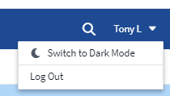

資料收集器支援
我們在「支援資料收集器」方面做了一些改善Cloud Insights 。以下是一些重點摘要：
-
Amazon FSX for ONTAP Sf2的新收藏品
2021年9月
效能原則現已成為監控者
監控和警示已在Cloud Insights 整個過程中支援效能政策和違規行爲。 "使用監視器警示" 提供更大的靈活度、並深入瞭解環境中的潛在問題或趨勢。
監控器中的自動完成建議、萬用字元和運算式
建立警示監控器時、輸入篩選器現在是預測性的、可讓您輕鬆搜尋及尋找監控器的度量或屬性。此外、您也可以根據輸入的文字來建立萬用字元篩選器。

更新的Telegraf代理程式
擷取遠距網路整合資料的代理程式已更新至* 1.19.3*版、效能與安全性均有所改善。想要更新的使用者可參閱的適當升級部分 "代理程式安裝" 文件。先前版本的代理程式將繼續運作、不需要使用者採取任何行動。
資料收集器支援
我們在「支援資料收集器」方面做了一些改善Cloud Insights 。以下是一些重點摘要：
-
Microsoft Hyper-V收集器現在使用PowerShell而非WMI
-
Azure VM和VHD收集器現在因為平行呼叫而速度加快10倍
-
HPE Nimble現在支援聯盟和iSCSI組態
由於我們一直在改善資料收集、以下是近期的一些注意事項變更：
-
EMC Powerstore的新收集器
-
Hitachi Ops Center的新收集器
-
Hitachi Content Platform的新收集器
-
強化ONTAP 的支援功能可回報Fabric資源池
-
利用儲存資源池和Volume效能來增強anf
-
增強的EMC ECS具備儲存節點和儲存效能、以及儲存區中的物件數
-
增強EMC Isilon的儲存節點和Qtree指標
-
採用Volume QoS限制指標的增強EMC Symetrix
-
增強型IBM SVC和EMC PowerStore、含儲存節點父序號
2021年8月
2021年6月
篩選器中的自動完成建議、萬用字元和運算式
有了Cloud Insights 這個版本的功能、您不再需要知道查詢或小工具中要篩選的所有可能名稱和值。篩選時、您只要開始輸入、Cloud Insights 即可根據文字來建議值。不再需要預先查詢應用程式名稱或Kubernetes屬性、只要尋找您要顯示在小工具中的名稱即可。
當您輸入篩選時、篩選器會顯示您可從中選擇的智慧型結果清單、以及根據目前文字建立*萬用字元篩選器*的選項。選取此選項會傳回符合萬用字元運算式的所有結果。當然、您也可以選取多個要新增至篩選的個別值。

此外、您也可以使用Not or或在篩選器中建立*運算式*、或選取「無」選項來篩選欄位中的null值。
深入瞭解 "篩選選項" 在查詢和小工具中。
API依版本提供
利用標準版和高級版的警示API、更容易存取功能強大的API。Cloud Insights每個版本均提供下列API：
| API類別 | 基本 | 標準 | 優質 |
|---|---|---|---|
擷取單位 |
|
|
|
資料收集 |
|
|
|
警示 |
|
|
|
資產 |
|
|
|
資料擷取 |
|
|

Kubernetes PV和Pod可見度
支援VMware View、可讓您清楚掌握Kubernetes環境的後端儲存設備、深入瞭解Kubernetes Pod和持續磁碟區（PV）Cloud Insights 。您現在可以追蹤PV計數器、例如IOPS、延遲和處理量、從單一Pod的使用量、透過PV計數器、直到PV、再到後端儲存設備。
在Volume或內部Volume登陸頁面上、會顯示兩個新表格：
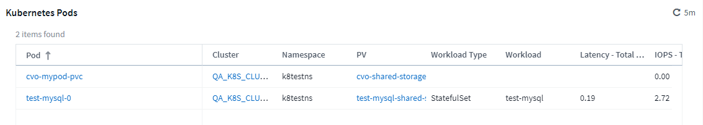
請注意、為了善用這些新表格、建議您先解除安裝目前的Kubernetes代理程式、然後重新安裝。您也必須安裝Kube-State-Metrics版本2.1.0或更新版本。
Kubernetes節點到VM連結
在Kubernetes Node頁面上、您現在可以按一下以開啟Node的VM頁面。VM頁面也包含指向Node本身的連結。


警示監控取代效能原則
為了實現多個臨界值的額外效益、網路連結和電子郵件警示交付、使用單一介面警示所有指標、Cloud Insights 以及更多優點、在2021年7月和8月期間、將Standard和Premium Edition客戶從*效能原則*轉換為*監控器*。深入瞭解 "警示與監控"、敬請密切關注這項令人興奮的改變。
支援NFS Cloud Secure
目前支援NFS進行資料蒐集。Cloud Secure ONTAP監控SMB和NFS使用者存取、保護資料免受勒索軟體攻擊。此外Cloud Secure 、支援Active Directory和LDAP使用者目錄來收集NFS使用者屬性。
不執行快照清除Cloud Secure
利用Snapshot清除設定自動刪除快照、節省儲存空間、並減少手動刪除快照的需求。Cloud Secure

資料收集速度Cloud Secure
單一資料收集器代理程式系統現在可以每秒發佈多達20、000個事件到Cloud Secure 位。
2021年5月
以下是我們在四月所做的一些變更：
更新的Telegraf代理程式
擷取遠端作業網路整合資料的代理程式已更新至1.17.3版、效能與安全性均有所改善。想要更新的使用者可參閱的適當升級部分 "代理程式安裝" 文件。先前版本的代理程式將繼續運作、不需要使用者採取任何行動。
新增修正動作至警示
您現在可以在建立或修改監視器時、填入*新增警示說明*區段、以新增選擇性的說明、以及其他深入見解和/或修正行動。說明會隨警示一起傳送。「_Insights and Corrective actions」欄位可提供處理警示的詳細步驟和指引、並會顯示在警示登陸頁的摘要區段中。

適用於所有版本的API Cloud Insights
API存取功能現已在Cloud Insights 所有版本的不受影響的地方提供。Basic版本的使用者現在可以自動化擷取單元和資料收集器的動作、而Standard Edition的使用者可以查詢指標和擷取自訂指標。Premium版本持續允許完整使用所有API類別。
| API類別 | 基本 | 標準 | 優質 |
|---|---|---|---|
擷取單位 |
|
|
|
資料收集 |
|
|
|
資產 |
|
|
|
資料擷取 |
|
|
|
資料倉儲 |
|
如需API使用方式的詳細資訊、請參閱 "API文件"。
2021年4月
更輕鬆地管理監控器
"監控群組" 簡化環境中的監控管理。現在可以將多個監視器群組在一起、並將其暫停為一個監視器。例如、如果您在基礎架構堆疊上進行更新、只要按一下滑鼠、就能暫停來自所有裝置的警示。
監控群組是令人興奮的全新功能的第一部分、可改善ONTAP 對各種顯示器的管理Cloud Insights 。

使用Webhooks增強警示選項
許多商業應用程式都支援 "Webhooks" 作為標準輸入介面。現在、除了提供可自訂的通用Webhooks來支援許多其他應用程式之外、還支援許多這些交付管道、為Slack、PagerDuty、團隊和不和提供預設範本。Cloud Insights

改善裝置識別
為了改善監控和疑難排解、以及提供準確的報告、瞭解裝置名稱而非其IP位址或其他識別碼是很有幫助的。現在、利用稱為規則型的方法、將自動識別環境中儲存設備和實體主機裝置的名稱Cloud Insights "設備分辨率"（可從*管理*功能表取得）。
您還需要更多資訊！
客戶最常詢問的是更多預設選項、以視覺化資料範圍、因此我們新增了下列五個新選項、這些選項現在可透過時間範圍選擇器在整個服務中使用：
-
最後30分鐘
-
過去2小時
-
過去6小時
-
過去12小時
-
過去2天
單Cloud Insights 一支援環境中的多項訂閱
從4月2日起Cloud Insights 、針對單Cloud Insights 一實例的客戶、支援多個相同版本類型的訂閱。如此一來、客戶就能在Cloud Insights 購買基礎架構時、共同訂閱自己的不實部分。請聯絡NetApp銷售人員、以取得多項訂閱的協助。
選擇您的途徑
設定Cloud Insights 時、您現在可以選擇從監控和警示開始、還是從勒索軟體和內部威脅偵測開始。將根據您選擇的路徑來設定您的起始環境。Cloud Insights您可以在之後的任何時間設定其他路徑。
更容易Cloud Secure 入門
全新的逐步設定檢查清單、讓Cloud Secure 您更輕鬆地開始使用NetApp。

一如既往、我們很樂意傾聽您的建議！請將其傳送至ng-cloudinsights-customerfeedback@netapp.com。
2021年2月
更新的Telegraf代理程式
擷取遠距網路雜訊整合資料的代理程式已更新至1.17.0版、其中包含弱點與錯誤修復。
雲端成本分析工具
透過雲端成本體驗NetApp的即點功能、提供詳細資料 "成本分析" 過去、現在及預估的支出、可清楚掌握環境中的雲端使用狀況。雲端成本儀表板可清楚檢視雲端支出、並深入瞭解個別工作負載、帳戶和服務。
雲端成本有助於解決下列重大挑戰：
-
追蹤及監控雲端支出
-
找出浪費與潛在最佳化領域
-
交付可執行的行動項目
雲端成本著重於監控。透過NetApp帳戶升級至完整位置、以實現自動成本節約與環境最佳化。
使用篩選器查詢具有null值的物件
現在、透過使用篩選器、即可搜尋具有null值/無值的屬性和指標。Cloud Insights您可以在下列位置對任何屬性/指標執行此篩選：
-
在「查詢」頁面上
-
在儀表板小工具和頁面變數中
-
在警示清單頁面上
-
建立監視器時
若要篩選空值/無值、只要在適當的篩選器下拉式清單中顯示_無_選項即可。

多區域支援
從今天起、我們將在Cloud Insights 全球各地提供「支援」服務、以利提升效能、並提升美國境外客戶的安全性。Cloud Insights / Cloud Secure會根據環境建立所在的地區來儲存資訊。
按一下 "請按這裡" 以取得更多資訊。
2021年1月
已重新命名其他ONTAP 的部分指標
為了持續改善ONTAP 從NetApp系統收集資料的效率、我們重新ONTAP 命名了下列各項指標、作為我們持續努力的一部分。
如果您現有的儀表板小工具或查詢使用上述任一度量、則必須編輯或重新建立這些小工具或查詢、才能使用新的度量名稱。
| 先前的度量名稱 | 新的度量名稱 |
|---|---|
NetApp_ONTAP.disk_ention.total_Transfers |
NetApp_ONTAP.disk_ention.total_IOPS |
NetApp_ONTAP.disk.total_Transfers |
NetApp_ONTAP.disk.total_IOPS |
NetApp_ONTAP.FP_Lif.read_data |
NetApp_ONTAP.FP_Lif.read_piv處理 量 |
NetApp_ONTAP.FP_Lif.WRITE資料 |
NetApp_ONTAP.FP_Lif.WRITE處理量 |
NetApp_ONTAP.iscs_lif.read_data |
NetApp_ONTAP.iscs_lif.read_piv處理 量 |
NetApp_ONTAP.iSCSI_Lif.WRITE資料 |
NetApp_ONTAP.iSCSI_Lif.WRITE處理量 |
NetApp_ONTAP.Lif.recv_data |
NetApp_ONTAP.Lif.recv_pUAP |
netapp_ontap.lif.sent_data |
netapp_ontap.lif.sent_throughput |
NetApp_ONTAP.LUN.read_data |
NetApp_ONTAP.LUN.read_punmitless |
NetApp_ONTAP.LUN.WRITE資料 |
NetApp_ONTAP.LUN.WRITE處理量 |
NetApp_ONTAP.NIC通用.Rx_bytes |
NetApp_ONTAP.NIC通用.Rx_pAPRUS傳輸 量 |
NetApp_ONTAP.NIC通用.Tx_bytes |
NetApp_ONTAP.NI_common。Tx_pAP傳輸 量 |
NetApp_ONTAP.path.read_data |
NetApp_ONTAP.path.read_p處理 量 |
NetApp_ONTAP.path.WRITE資料 |
NetApp_ONTAP.path.WRITE處理量 |
NetApp_ONTAP.path.total_data |
NetApp_ONTAP.path.總計 處理量 |
NetApp_ONTAP.policy_group.read_data |
NetApp_ONTAP.policy_group.read_p處理 量 |
NetApp_ONTAP.policy_group.write資料 |
NetApp_ONTAP.policy_group.WRITE處理量 |
NetApp_ONTAP.policy_group.other資料 |
NetApp_ONTAP.policy_group.other處理量 |
NetApp_ONTAP.policy_group.total_data |
NetApp_ONTAP.policy_group.total_p處理 量 |
NetApp_ONTAP.system_node.disk_data_read |
NetApp_ONTAP.system_node.disk_pAPN量_read |
NetApp_ONTAP.system_node.disk_data_寫入 |
NetApp_ONTAP.system_node.disk_pAPN量 寫入 |
NetApp_ONTAP.system_node.HDD_data_read |
NetApp_ONTAP.system_node.HDD_傳輸 量讀取 |
NetApp_ONTAP.system_node.HDD_data_寫入 |
NetApp_ONTAP.system_node.HDD_傳輸 量寫入 |
NetApp_ONTAP.system_node.ssd資料讀取 |
NetApp_ONTAP.system_node.ssd處理量_read |
NetApp_ONTAP.system_node.ssd資料寫入 |
NetApp_ONTAP.system_node.ssd處理量寫入 |
netapp_ontap.system_node.net_data_recv |
netapp_ontap.system_node.net_throughput_recv |
netapp_ontap.system_node.net_data_sent |
netapp_ontap.system_node.net_throughput_sent |
NetApp_ONTAP.system_node.fP_data_recv |
NetApp_ONTAP.system_node.fP_pAPN量_recv |
NetApp_ONTAP.system_node.fP_data_sent |
NetApp_ONTAP.system_node.fP_pAPN量_sent |
NetApp_ONTAP.volume節點.CIFs_read_data |
NetApp_ONTAP.Volume節點.CIFs_read_pAP傳輸 量 |
NetApp_ONTAP.Volume節點.CIFs_WRITE資料 |
NetApp_ONTAP.Volume節點.CIFs_WRITE處理量 |
NetApp_ONTAP.volume節點.nfs_read_data |
NetApp_ONTAP.volume節點.nfs_read_p處理 量 |
NetApp_ONTAP.Volume節點.NFs_WRITE資料 |
NetApp_ONTAP.Volume節點.NFs_WRITE處理量 |
NetApp_ONTAP.volume節點.iscsa_read_data |
NetApp_ONTAP.volume節點.iscsa_read_p處理 量 |
NetApp_ONTAP.volume節點.iscsa_write資料 |
NetApp_ONTAP.volume節點.iscsa_write處理量 |
NetApp_ONTAP.volume節點.FCP讀取資料 |
NetApp_ONTAP.volume節點.FCP讀取處理量 |
NetApp_ONTAP.volume節點.FCP寫入資料 |
NetApp_ONTAP.volume節點.FCP寫入處理量 |
NetApp_ONTAP.volume：read_data |
NetApp_ONTAP.Volume。read_pAP傳輸 量 |
NetApp_ONTAP.volume：WRITE資料 |
NetApp_ONTAP.Volume：WRITE：處理量 |
NetApp_ONTAP.Workload。read_data |
NetApp_ONTAP.Workload。read_p處理 量 |
NetApp_ONTAP.Workload寫入資料 |
NetApp_ONTAP.Workload寫入處理量 |
NetApp_ONTAP.Workload Volume。read_data |
NetApp_ONTAP.Workload Volume。read_p處理 量 |
NetApp_ONTAP.Workload Volume。WRITE資料 |
NetApp_ONTAP.Workload Volume：WRITE：處理量 |
全新Kubernetes Explorer
。 "Kubernetes Explorer" 提供Kubernetes叢集的簡單拓撲檢視、即使是非專家也能從叢集層級到容器和儲存設備、迅速找出問題和相依性。
您可以使用Kubernetes Explorer的深入詳細資料、探索Kubernetes環境中的叢集、節點、Pod、容器和儲存設備的狀態、使用狀況和健全狀況、以瞭解各種資訊。

2020年12月
2020年11月
其他儀表板
下列以ONTAP為主的新儀表板已新增至圖庫、可供匯入：
-
產品特色：Aggregate效能與容量ONTAP
-
《〈FAS / AFF -容量使用率》ONTAP
-
部分FAS / AFF -叢集容量ONTAP
-
NetApp解決方法：ONTAP 效率
-
《FS/AFF》-《效能》ONTAP FlexVol
-
不支援FAS / AFF：節點作業/最佳點ONTAP
-
NetApp的解決方案：前置容量效率ONTAP
-
《網路連接埠活動ONTAP
-
產品特色：節點傳輸協定效能ONTAP
-
內容：節點工作負載效能（前端）ONTAP
-
處理器ONTAP
-
例：SVM工作負載效能（前端）ONTAP
-
適用對象：Volume工作負載效能（前端）ONTAP
表格小工具中的欄重新命名
您可以在「編輯」模式中開啟小工具、然後按一下欄頂端的功能表、以重新命名表格小工具的「Metrics and Attributes」區段中的欄。輸入新名稱、然後按一下「Save」、或按一下「Reset」將欄設回原始名稱。
請注意、這只會影響表格小工具中欄的顯示名稱；基礎資料本身的度量/屬性名稱不會變更。

2020年10月
預設的整合資料擴充
表Widget群組現在允許預設擴充Kubernetes、ONTAP 支援「進階資料」和「代理節點」度量。例如、如果您將Kubernetes _節點_依_Cluster_分組、您會在表格中看到每個叢集的一列。然後您可以展開每個叢集列、以查看節點物件的清單。
Basic Edition技術支援
除了Standard和Premium Edition之外、現在還提供技術支援Cloud Insights 給簽署《支援》的人士。此外、這個功能也簡化了建立NetApp支援服務單的工作流程。Cloud Insights
資訊公共API Cloud Secure
支援Cloud Secure "REST API" 存取活動和警示資訊。這是透過Cloud Secure 使用API存取權杖來完成的、它是透過「管理員UI」建立的、然後用來存取REST API。這些REST API的Swagger文件已整合Cloud Secure 至
2020年9月
查詢含有整合資料的頁面
「支援整合資料的「物件查詢」頁面（例如Kubernetes、《支援進階指標》等）Cloud Insights ONTAP 。處理整合資料時、查詢結果表會顯示「分割畫面」檢視、左側為物件/群組、右側為物件資料（屬性/度量）。您也可以選擇多個屬性來分組整合資料。

表格中的單位顯示格式Widget
顯示度量/計數器資料（例如、GB、MB/秒等）的欄位、現在可以在表格小工具中使用單位顯示格式設定。若要變更度量的顯示單位、請按一下欄標題中的「三點」功能表、然後選取「單位顯示」。您可以從任何可用的單位中選擇。可用的單位會因顯示欄中的度量資料類型而有所不同。
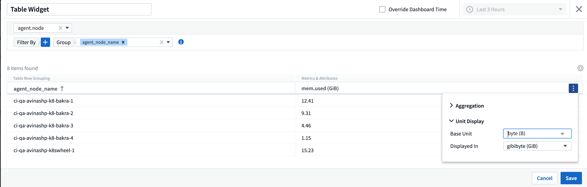
擷取單位詳細資料頁面
採購單位現在擁有自己的登陸頁面、提供每個AU的實用詳細資料、以及協助疑難排解的資訊。。 "AU詳細資料頁面" 提供AU資料收集器的連結、以及實用的狀態資訊。
取消了Docker相依性Cloud Secure
Cloud Secure對Docker的依賴性已經移除。Docker不再是Cloud Secure 安裝程式的必要條件。
報告使用者角色
如果您使用Cloud Insights 含報告功能的支援版、Cloud Insights 您環境中的每位支援者也都會有單一登入（SSO）登入報告應用程式（即 Cognos）；按一下功能表中的* Reports*連結、即可自動登入報告。
他們在Cloud Insights 使用者角色中扮演的角色決定了他們的角色 "報告使用者角色"：
職務Cloud Insights |
報告角色 |
報告權限 |
訪客 |
消費者 |
可檢視、排程及執行報告、並設定個人偏好設定、例如語言和時區的偏好設定。使用者無法建立報告或執行管理工作。 |
使用者 |
作者 |
可執行所有的「消費者」功能、以及建立及管理報告和儀表板。 |
系統管理員 |
系統管理員 |
可以執行所有的「作者」功能、以及所有管理工作、例如報告的組態、以及報告工作的關機和重新啟動。 |
|
|
適用於500 MU以上的環境。Cloud Insights |

|
如果您是目前的Premium Edition客戶、而且想保留您的報告、請閱讀本文 "現有客戶的重要注意事項"。 |
資料擷取的新API類別
包含*資料擷取* API類別、讓您更能掌控自訂資料和代理程式。Cloud Insights如需此API類別和其他API類別的詳細文件、Cloud Insights 請瀏覽至*管理> API存取*、然後按一下_API Documentation（API文件）連結。您也可以在「附註」欄位中附加註解至AU、此欄位會顯示在AU詳細資料頁面和AU清單頁面上。
2020年8月

2020年7月
執行Snapshot動作Cloud Secure
當偵測到惡意活動時、利用自動擷取快照功能來保護資料、確保資料安全備份。Cloud Secure
您可以定義自動回應原則、以便在偵測到勒索軟體攻擊或其他異常使用者活動時、擷取快照。您也可以從警示頁面手動擷取快照。
自動拍攝的快照：
手動快照：
衡量標準/計數器更新
下列容量計數器可用於Cloud Insights 靜態UI和REST API。以前這些計數器只能用於資料倉儲/報告。
| 物件類型 | 計數器 |
|---|---|
儲存設備 |
容量-備用原始容量-原始失敗 |
儲存資源池 |
資料容量-已用資料容量-其他總容量-已用其他容量-總容量-原始容量-軟限制 |
內部Volume |
資料容量-已用資料容量-其他總容量-已用其他容量-已儲存完整複製容量-總計 |
可偵測到的攻擊Cloud Secure
目前可偵測勒索軟體等潛在攻擊。Cloud Secure按一下「警示」清單頁面中的警示、即可開啟顯示下列項目的詳細資料頁面：
-
攻擊時間
-
相關的使用者與檔案活動
-
已採取的行動
-
其他資訊可協助追蹤可能的安全漏洞
顯示潛在勒索軟體攻擊的警示頁面：
潛在勒索軟體攻擊的詳細資料頁面：
透過AWS訂閱Premium Edition
在Cloud Insights 您試用版的過程中、您可以 "自行訂閱" 透過AWS Marketplace移轉Cloud Insights 至「不一樣的標準版」或「優質版」。之前、您只能透過AWS Marketplace自行訂閱至Standard Edition。
增強型表格小工具
儀表板/資產頁面表Widget包含下列增強功能：
-
「分割畫面」檢視：表格小工具會在左側顯示物件/群組、並在右側顯示物件資料（屬性/度量）。

-
多重屬性群組：對於整合資料（Kubernetes、ONTAP 《進階指標》、Docker等）、您可以選擇多個屬性進行群組。資料會根據您選擇的群組屬性顯示。
使用整合資料分組（以編輯模式顯示）：

-
基礎架構資料（儲存設備、EC2、VM、連接埠等）的分組、是依照以往的單一屬性進行。當依非物件的屬性分組時、表格可讓您展開群組列、以查看群組中的所有物件。
使用基礎架構資料分組（以顯示模式顯示）：

度量篩選
除了篩選Widget中物件的屬性之外、您現在也可以篩選度量。

使用整合資料（Kubernetes、ONTAP 《支援進階資料》等）時、度量篩選會從繪圖資料系列中移除個別/不相符的資料點、這與基礎架構資料（儲存設備、VM、連接埠等）不同、因為篩選器會處理資料系列的集合值、並可能從圖表中移除整個物件。

支援進階計數器資料ONTAP
利用NetApp的ONTAP專屬*進階計數器資料*、提供從各個元件收集的許多計數器和指標。Cloud Insights ONTAP所有NetApp供應的是「進階計數器資料」ONTAP ONTAP 。這些指標可在Cloud Insights 各個方面的Widget和儀表板中、提供自訂且廣泛的視覺化功能。
若要找到「進階計數器」、請在Widget的查詢中搜尋「NetApp_ONTAP」、然後從計數器中選取。ONTAP

您可以輸入計數器名稱的其他部分來精簡搜尋。例如：
-
lif
-
_Aggregate _
-
offbox vscan伺服器
-
以及更多資訊
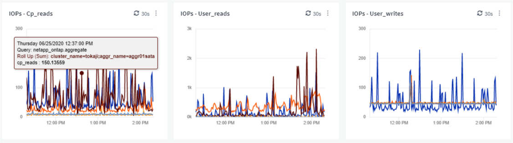
請注意下列事項：
-
進階資料收集功能預設會啟用、以供新ONTAP 的資料蒐集器使用。若要為現有ONTAP 的資料收集器啟用進階資料收集功能、請編輯資料收集器、然後展開「Advanced Configuration」（_進階組態）區段。
-
進階資料收集功能無法用於7-mode ONTAP 的功能。
進階計數器儀表板
隨附多種預先設計的儀表板、可協助您開始針對_Aggregate Performance、Volume Workload、_Processor Activity_等主題、視覺化功能強大的進階計數器。Cloud Insights ONTAP如果ONTAP 您已設定至少一個資料收集器、則可從任何儀表板清單頁面的儀表板庫匯入這些資料。
深入瞭解
如需ONTAP 更多關於「支援進階資料」的資訊、請參閱下列連結：
原則與違規功能表
效能原則與違規事件現在可在*警示*功能表下找到。原則與違規功能不變。

更新的Telegraf代理程式
擷取遠端作業環境整合資料的代理程式已更新至 "1.14版"（包括錯誤修復、安全修復和新插件）。
附註：在Kubernetes平台上設定Kubernetes資料收集器時、由於「clusterrole」屬性權限不足、您可能會在記錄中看到「HTTP狀態為「4003 Forbided」錯誤。
若要解決此問題、請在端點存取叢集角色的_規則：_區段中新增下列反白顯示的行、然後重新啟動Telegraf Pod。
rules: - apiGroups: - "" - apps - autoscaling - batch - extensions - policy - rbac.authorization.k8s.io attributeRestrictions: null resources: - nodes/metrics - nodes/proxy <== Add this line - nodes/stats - pods <== Add this line verbs: - get - list <== Add this line
2020年6月
簡化資料收集器錯誤報告
使用資料收集器頁面上的「傳送錯誤報告」按鈕、報告資料收集器錯誤更容易。按一下按鈕、即可將錯誤的基本資訊傳送給NetApp、並提示調查問題。按下Cloud Insights 此按鈕後、即可確認NetApp已收到通知、並停用「錯誤報告」按鈕、表示已傳送該資料收集器的錯誤報告。按鈕會一直停用、直到瀏覽器頁面重新整理為止。

小工具改良功能
儀表板小工具已進行下列改善。這些改良功能被視為預覽功能、並非所有Cloud Insights 的支援環境都能使用。
-
新的物件/度量選擇器：物件（儲存設備、磁碟、連接埠、節點等）及其相關的度量（IOPS、延遲、CPU計數等）、現在可在內含的單一下拉式清單中、以強大的搜尋功能提供於小工具中。您可以在下拉式清單中輸入多個部分詞彙、Cloud Insights 而功能表將列出符合這些詞彙的所有物件指標。

-
多個標記群組：使用整合資料（Kubernetes等）時、您可以依多個標記/屬性來群組資料。例如、Kubernetes命名空間和Container名稱的總和記憶體使用量。
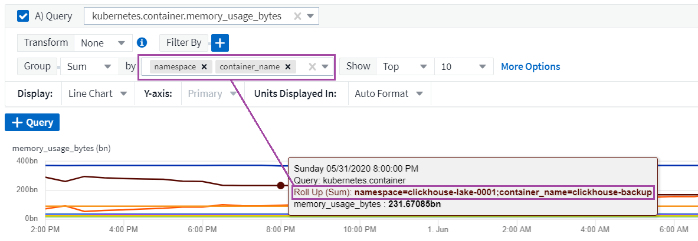
2020年5月
報告使用者角色
已新增下列報告角色：
-
使用者：可執行及檢視報告Cloud Insights
-
編寫者：可執行「消費者」功能、以及建立及管理報告和儀表板Cloud Insights
-
系統管理員：可執行「作者」功能及所有管理工作Cloud Insights
更新Cloud Secure
包含下列近期的功能變更。Cloud Insights Cloud Secure
在「鑑識」>「活動鑑識」頁面中、我們提供兩種檢視來分析和調查使用者活動：
-
活動檢視、著重於使用者活動（何種營運？執行地點？）
-
圖元檢視、著重於使用者存取的檔案。

此外、警示電子郵件通知現在也包含警示頁面的直接連結。
儀表板群組
儀表板群組可提供更好的功能 "儀表板管理" 與您有關的。您可以將相關儀表板新增至群組、以進行「一站式」管理、例如儲存設備或虛擬機器。
每個使用者都會自訂群組、因此一個人的群組可以不同於其他人的群組。您可以擁有任意數量的群組、每個群組中只有您想要的儀表板數量或數量。

儀表板鎖定
您可以固定儀表板、讓我的最愛永遠顯示在清單頂端。

TV模式和自動重新整理
"TV模式和自動重新整理" 允許在儀表板或資產頁面上近乎即時地顯示資料：
-
*電視模式*提供簡潔的顯示；導覽功能表隱藏起來、為您的資料顯示提供更多螢幕空間。
-
儀表板和資產登陸頁上小工具中的資料*自動重新整理*根據所選儀表板時間範圍（或小工具時間範圍、如果設定為覆寫儀表板時間）所決定的重新整理時間間隔（每10秒）。
結合電視模式和自動更新功能、可即時檢視Cloud Insights 您的資料、最適合無縫示範或內部監控。
2020年4月
全新儀表板時間範圍選擇
儀表板和Cloud Insights 其他資訊頁面的時間範圍選項現在包括_過去1小時_和_過去15分鐘_。
更新Cloud Secure
包含下列近期的功能變更。Cloud Insights Cloud Secure
-
更好的檔案和資料夾中繼資料會變更辨識、以偵測使用者是否變更權限、擁有者或群組擁有權。
-
匯出使用者活動報告至CSV。
可監控及稽核所有使用者對檔案與資料夾的存取作業。Cloud Secure活動稽核可讓您遵循內部安全原則、符合PCI、GDPR及HIPAA等外部法規遵循要求、並進行資料外洩與安全事件調查。
預設儀表板時間
儀表板的預設時間範圍現在是3小時、而非24小時。
最佳化的集合時間
最佳化 "時間集合" 時間序列小工具（折線、不規則曲線、區域和堆疊區域圖）的時間間隔、在3小時和24小時儀表板/小工具的時間範圍內更為頻繁、因此能更快速地記錄資料。
-
3小時的時間範圍可最佳化為1分鐘的集合時間間隔。此前為5分鐘。
-
24小時時間範圍可最佳化為30分鐘的集合時間間隔。此前為1小時。
您仍可設定自訂時間間隔、以覆寫最佳化的集合體。
顯示單位自動格式化
在大多數的小工具中、Cloud Insights Ses庫 都知道要顯示值的基本單位、例如_megabytes_、t千、Percent_、misms（ms）、 等等、現在 "自動格式化" 將小工具移至最易讀取的單位。例如、1、234、567、890位元組的資料值會自動格式化為1.23 GB。在許多情況Cloud Insights 下、不知獲得資料的最佳格式為何。如果您不知道最佳格式、或是在您要覆寫自動格式的小工具中、可以選擇您要的格式。


更簡單的Widget選擇器
新的小工具選取器可在單一All同時檢視中顯示所有小工具類型、讓新增小工具至儀表板和資產登陸頁面變得更簡單、因此使用者不再需要捲動小工具類型清單、即可找到想要新增的小工具類型。相關的小工具會以色彩協調、並在新選取元中依距離分組。
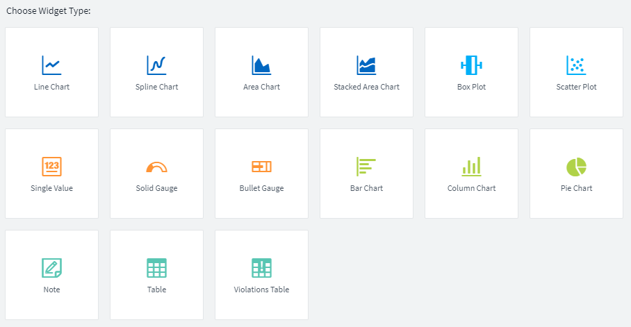
2020年2月
API與Premium Edition
隨附的就是Cloud Insights "強大的API" 可用來整合Cloud Insights 諸如CMDB或其他票務系統等其他應用程式的功能。
如需詳細的Swagger型資訊、請參閱*管理> API存取*、* API Documentation *連結下的。Swagger提供API的簡短說明和使用資訊、並可讓您在環境中試用每個API。
利用「存取權杖」Cloud Insights 來存取API類別（例如資產或集合）、以權限為基礎。
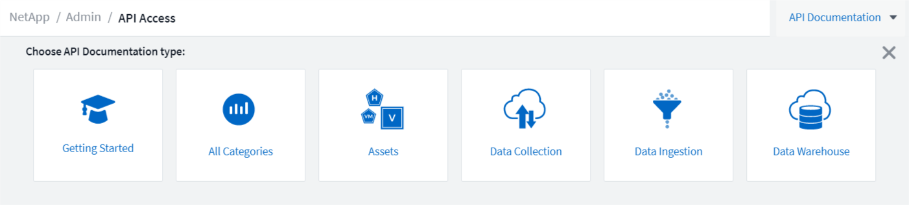
新增資料收集器之後的初始輪詢
先前、設定新的資料收集器之後Cloud Insights 、將會立即輪詢資料收集器以收集_inventory_資料、但會等到設定的效能輪詢時間間隔（通常為15分鐘）之後、才會收集初始_Performance資料。然後、它會等待另一個時間間隔、再開始進行第二次效能調查、這表示從新的資料收集器取得有意義的資料之前、最多需要30分鐘。
資料收集器 "輪詢" 已大幅改善、因此在庫存輪詢後立即進行初始效能輪詢、第二次效能輪詢會在第一次效能輪詢完成後數秒內進行。如此一來、即可在極短的時間內、在儀表板和圖表上顯示實用資料。Cloud Insights
此輪詢行為也會在編輯現有資料收集器的組態之後發生。
更輕鬆地複製小工具
在儀表板或登陸頁面上建立小工具複本比以往更容易。在儀表板編輯模式中、按一下小工具上的功能表、然後選取*複製*。Widget編輯器隨即啟動、並預先填入原始Widget的組態、並在Widget名稱中加上「copy」字尾。您可以輕鬆進行任何必要的變更、並儲存新的小工具。小工具會放置在儀表板底部、您可以視需要加以定位。請記得在完成所有變更時儲存儀表板。

單一登入（SSO）
有了支援功能的支援版、系統管理員就能啟用* Cloud Insights"單一登入"*（SSO）存取Cloud Insights 公司網域中的所有使用者、無需個別邀請他們。啟用SSO後、任何具有相同網域電子郵件地址的使用者都能Cloud Insights 使用公司認證登入。
|
|
SSO僅在Cloud Insights 支援Cloud Insights 功能不支援的版本中提供、必須先設定SSO、才能啟用以供使用。SSO組態包括 "身分識別聯盟" 透過NetApp Cloud Central：聯盟可讓單一登入使用者使用公司目錄中的認證資料來存取您的NetApp Cloud Central帳戶。 |
2020年1月
REST API的Swagger文件
Swagger會說明Cloud Insights 各種可用的REST API、以及其使用方式和語法。如需Cloud Insights 有關部分API的資訊、請參閱 "文件"。

擷取單位變更
在與已安裝AU名稱相同的主機或VM上安裝擷取單元（AU）時Cloud Insights 、用「_1」、「_2」附加AU名稱、以確保其為唯一名稱。 等。在不從Cloud Insights 內存中移除AU的情況下、從同一個VM中解除安裝和重新安裝AU時、也會發生這種情況。想要一起使用不同的AU名稱嗎？沒問題、安裝後即可重新命名AU。
在小工具中最佳化時間集合
在小工具中、您可以選擇設定的_最佳化_時間集合時間間隔或_自訂_時間間隔。最佳化的集合會根據選取的儀表板時間範圍（或是取代儀表板時間的Widget時間範圍）、自動選取適當的時間間隔。儀表板或小工具時間範圍變更時、時間間隔會動態變更。
簡化Cloud Insights 「以流程為開始」程序
使用過程已簡化、讓您的初次設定更順暢、更輕鬆。Cloud Insights只要選取初始資料收集器、然後依照指示操作即可。下列步驟將引導您完成資料收集器的設定、以及所需的任何代理程式或擷取單位。Cloud Insights在大多數情況Cloud Insights 下、它甚至會匯入一或多個初始儀表板、讓您能迅速深入瞭解環境（但請等待30分鐘、以便讓效益分析系統收集有意義的資料）。
其他改善項目：
-
採購單元安裝更簡單、執行速度更快。
-
依字母順序排列的資料收集器選項可讓您更輕鬆地找到所需的資料。
-
改良的資料收集器設定指示更易於遵循。
-
經驗豐富的使用者只要按一下按鈕、就能跳過入門程序。
-
新的進度列會顯示您正在處理的進度。

2019年12月
營業實體可用於篩選器
企業實體附註可用於篩選查詢、小工具、效能原則和登陸頁面。
可針對單一值與量表小工具、以及「全部」套用的任何小工具進行向下切入
按一下單一值或量表Widget中的值、即可開啟查詢頁面、顯示Widget中使用的第一個查詢結果。此外、按一下任何以「All（全部）」彙總資料的Widget圖例、也會開啟查詢頁面、顯示Widget中使用的第一個查詢結果。
試用期延長
註冊免費試用Cloud Insights 版的新進使用者現在有30天時間可以評估產品。這比前14天試用期增加。
託管單位計算
在功能方面、對受管理單元（MU）的計算Cloud Insights 已變更為下列項目：
-
1個受管理單元= 2個主機（任何虛擬或實體機器）
-
1受管理單元= 4 TB未格式化的實體或虛擬磁碟容量
這項變更可有效增加使用現有Cloud Insights 的版本資訊訂閱監控環境容量的兩倍。
2019年11月
版本功能比較表
「管理>訂閱」頁面 "比較表" 已更新以列出Cloud Insights 適用於基本版、標準版和優質版的功能集。NetApp不斷改善雲端服務、因此請經常查看本頁、找出最適合您不斷演進的業務需求的版本。
2019年10月
報告
"《報告》 Cloud Insights" 是商業智慧工具、可讓您檢視預先定義的報告或建立自訂報告。有了「報告」、您可以執行下列工作：
-
執行預先定義的報告
-
建立自訂報告
-
自訂報告格式和交付方法
-
排程報告以自動執行
-
電子郵件報告
-
使用色彩來表示資料的臨界值
支援範圍包括計費、消費分析和預測、並可針對下列問題、產生自訂報告：Cloud Insights
-
我有什麼庫存？
-
我的庫存在哪裡？
-
誰在使用我們的資產？
-
分配給業務單位的儲存設備的計費方式為何？
-
需要多長時間才能取得額外的儲存容量？
-
業務單位是否與適當的儲存層一致？
-
儲存設備配置如何在一個月、一季或一年內改變？
提供Cloud Insights 報告功能、僅供參考* Premium版*。
功能強化Active IQ
"風險Active IQ" 現在可作為物件使用、以便查詢及用於儀表板表格小工具。包括下列風險物件屬性：類別*緩解類別*潛在影響*風險詳細資料*嚴重性*來源*儲存設備*儲存節點 UI類別
2019年9月
全新的儀表小工具
有兩個新的小工具可根據您指定的臨界值、在儀表板上以醒目的色彩顯示單一值資料。您可以使用*實體量表*或*項目符號量表*來顯示值。位於「警告」範圍內的值會以橘色顯示。臨界範圍內的值會以紅色顯示。低於警告臨界值的值會以綠色顯示。


單一值Widget的設定格式化色彩條件
您現在可以根據所設定的臨界值、以彩色背景顯示單值Widget。

在就職期間邀請使用者
在就職程序期間、您可以隨時按一下「管理」>「使用者管理」>「+使用者」、邀請更多使用者加入Cloud Insights 您的不合格環境。請注意、擁有_Guest或_User_角色的使用者在就職完成並收集資料後、將會獲得更大效益。
Data Collector詳細資料頁面改善
資料收集器詳細資料頁面已經過改良、可以更易讀取的格式顯示錯誤。現在、錯誤會顯示在頁面上的個別表格中、每個錯誤會顯示在不同的行中、以防資料收集器發生多個錯誤。
2019年8月
全部vs.可用的資料收集器
將資料收集器新增至環境時、您可以設定篩選條件、根據訂閱層級或所有資料收集器、僅顯示可用的資料收集器。
ActiveIQ整合
NetApp ActiveIQ會收集資料、為NetApp客戶及其硬體/軟體系統提供一系列視覺化、分析及其他支援相關服務。Cloud Insights與支援的資料管理系統整合。Cloud Insights ONTAP請參閱 "Active IQ" 以取得更多資訊。
2019年7月
儀表板改良
儀表板和小工具已經過下列變更改善：
-
除了Sum、Min、Max和Avg之外、* Count*現在是彙總單值小工具的選項。使用「Count」進行捲動時Cloud Insights 、此功能會檢查物件是否處於作用中狀態、並只將作用中的物件新增至計數。產生的數字取決於集合體和篩選器。
-
在單值小工具中、您現在可以選擇顯示0、1、2、3或4個小數位數的結果數字。
-
折線圖會在繪製單一計數器時、顯示座標軸標籤和單位。
-
* Transform*選項適用於所有指標的所有時間系列小工具中的服務整合資料。對於時間系列小工具（Line、Spline、Area、Stacked Area）中的任何服務整合（Telegraf）計數器或度量、您都可以選擇想要的方式 "轉換價值"。無（依現值顯示）、總和、差異、累計等
降級至基本版
如果在過去7天內沒有設定成功完成輪詢的可用NetApp裝置、降級至Basic Edition將會失敗並顯示錯誤訊息。
正在收集Kube-State-Metrics
。 "Kubernetes資料收集器" 現在、從kube狀態指標外掛程式收集物件和計數器、大幅擴充Cloud Insights 可在物件中監控的度量數量和範圍。
2019年6月
版本Cloud Insights
各種版本均提供以符合您的預算和業務需求。Cloud Insights擁有有效NetApp支援帳戶的現有NetApp客戶可享有7天的資料保留、免費*基本版*存取NetApp資料收集器、或是享有更高的資料保留率、存取所有受支援的資料收集器、專家技術支援及*標準版*的更多資訊。如需可用功能的詳細資訊、請參閱NetApp "Cloud Insights" 網站。
全新基礎架構資料收集器NetApp HCI
-
"虛擬中心NetApp HCI" 已新增為基礎架構資料收集器。HCI Virtual Center資料收集器會收集NetApp HCI 有關「支援主機」的資訊、並要求對Virtual Center內的所有物件擁有唯讀權限。
請注意、HCI資料收集器僅從HCI Virtual Center取得。若要從儲存系統收集資料、您也必須設定NetApp "SolidFire" 資料收集器：
2019年5月
全新服務資料收集器：Kapacitor
-
"Kapacitor" 已新增為服務的資料收集器。
透過Telegraf與服務整合
除了從交換器和儲存設備等基礎架構設備取得資料之外、Cloud Insights 現在還能使用從各種作業系統和服務收集資料 "Telegraf是其代理程式" 以收集整合資料。Telegraf是外掛程式導向的代理程式、可用來收集和報告指標。輸入外掛程式可透過直接存取系統/作業系統、呼叫協力廠商API或聆聽已設定的串流、將所需的資訊收集到代理程式中。
目前支援的整合文件可在左側*參考與支援*下的功能表中找到。
儲存虛擬機器資產
-
儲存虛擬機器（SVM）可做為Cloud Insights VMware的資產。SVM有自己的資產登陸頁面、可在搜尋、查詢和篩選中顯示及使用。SVM也可用於儀表板小工具、以及與附註相關的項目。
降低採購單位系統需求
-
擷取單元（AU）軟體的系統CPU和記憶體需求已經降低。新的要求如下：
元件 |
舊需求 |
新需求 |
CPU核心 |
4. |
2. |
記憶體 |
16 GB |
8 GB |
支援的其他平台
-
下列平台已新增至目前的平台 "支援Cloud Insights 的支援功能"：
Linux |
Windows |
CentOS 7.364位元CentOS 7.464位元CentOS 7.664位元DEBIAN9 64位元Red Hat Enterprise Linux 7.364位元Red Hat Enterprise Linux 7.464位元Red Hat Enterprise Linux 7.664位元Ubuntu Server 18.04 LTS |
Microsoft Windows 10 64位元Microsoft Windows Server 2008 R2 Microsoft Windows Server 2019 |
2019年4月
依標記篩選虛擬機器
設定下列資料收集器時、您可以根據其標記或標籤、篩選以將虛擬機器納入或排除在資料收集範圍之外。
2019年3月
2019年2月
從AWS子帳戶收集
-
支援Cloud Insights "從AWS子帳戶收集" 在單一資料收集器內。您的AWS環境必須設定為允許Cloud Insights 從子帳戶收集資訊。
資料收集器命名
-
Data Collector名稱現在除了可以包含字母、數字和下劃線之外、也可以包含句點（.）、連字號（-）和空格（）。名稱不得以空格、句點或連字號開頭或結尾。
2019年1月
「擁有者」欄位更易讀取
-
在儀表板和查詢清單中、「擁有者」欄位的資料先前是授權ID字串、而非使用者友好的擁有者名稱。「擁有者」欄位現在會顯示更簡單、更易讀取的擁有者名稱。
訂購頁面上的託管設備明細
-
對於「管理>訂閱」頁面上列出的每個資料收集器、您現在可以看到主機和儲存設備的受管理單元（MU）計數明細、以及總計。
2018年12月
改善UI載入時間
-
初始載入功能已大幅改善、以利Cloud Insights 使用者介面（UI）。使用者介面的重新整理時間、也因為在載入中繼資料的情況下有所改善而受益。
大量編輯資料收集器
-
您可以同時編輯多個資料收集器的資訊。在 * 可伺服 > 收集器 * 頁面上、勾選每個收集器左側的方塊、選取要修改的資料收集器、然後按一下 * 大量動作 * 按鈕。選擇*編輯*並修改必要欄位。
所選的資料收集器必須是相同的廠商和機型、並位於相同的擷取設備上。
在就職期間可取得支援與訂閱頁面
-
在就職工作流程中、您可以瀏覽至*「說明」>「支援」和「管理」>「訂閱」*頁面。如果您尚未關閉瀏覽器索引標籤、從這些頁面返回後、您將返回就職工作流程。
2018年11月
透過NetApp銷售或AWS Marketplace訂閱
-
現在可透過NetApp直接訂購和計費。Cloud Insights除了透過AWS Marketplace提供的自助服務訂閱之外、「管理>訂閱」頁面上會顯示一個新的*聯絡銷售*連結。對於環境中有或預期有1、000個以上託管單元（MU）的客戶、建議透過「聯絡銷售」連結聯絡NetApp銷售人員。
文字附註超連結
-
文字類型註釋現在可以包含超連結。
就職演練
-
目前、首位使用者（系統管理員或帳戶擁有者）登入新環境時、可透過內部作業逐步完成。Cloud Insights逐步解說會引導您安裝擷取單元、設定初始資料收集器、以及選取一或多個有用的儀表板。
從圖庫匯入儀表板
-
除了在就職期間選取儀表板之外、您也可以透過*儀表板>顯示所有儀表板*匯入儀表板、然後按一下*+從圖片庫*匯入儀表板。
複製儀表板
-
儀表板的複製功能已新增至儀表板清單頁面、做為每個儀表板選項功能表的選項、以及儀表板主頁面本身的_Save_功能表。
Cloud Central產品功能表
-
可讓您切換至其他NetApp Cloud Central產品的功能表已移至畫面右上角。